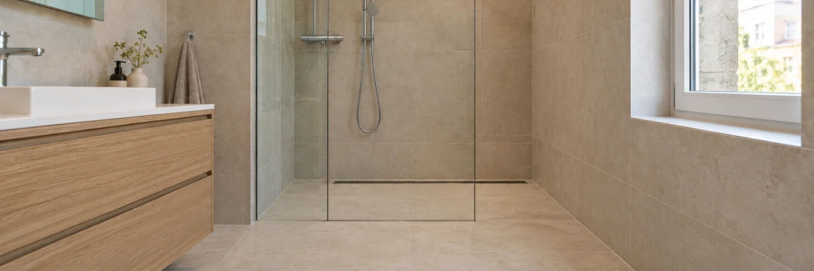
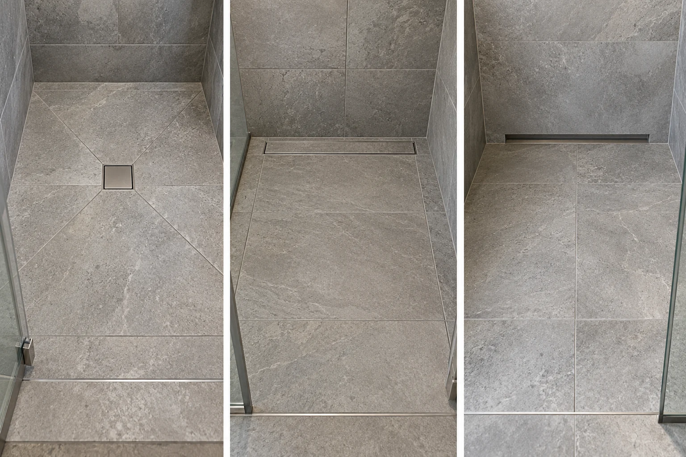
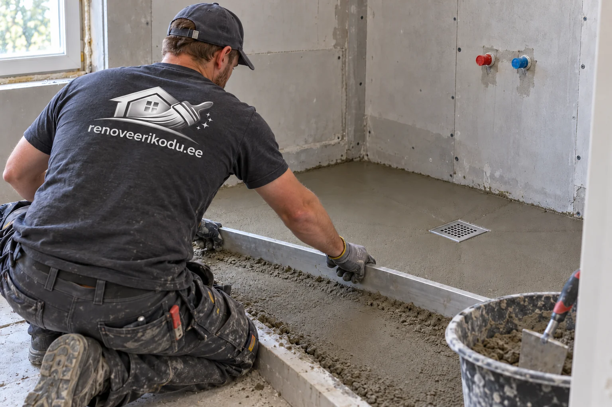
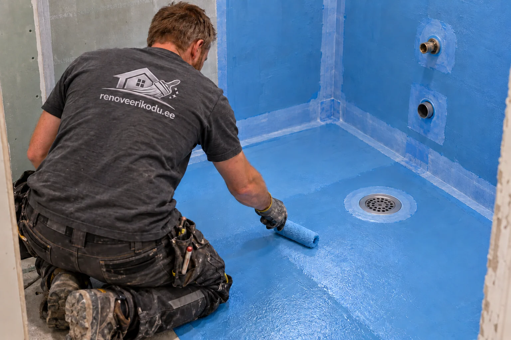
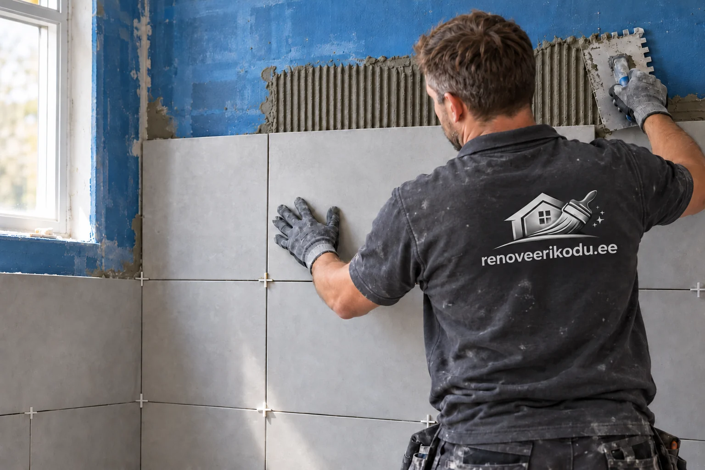
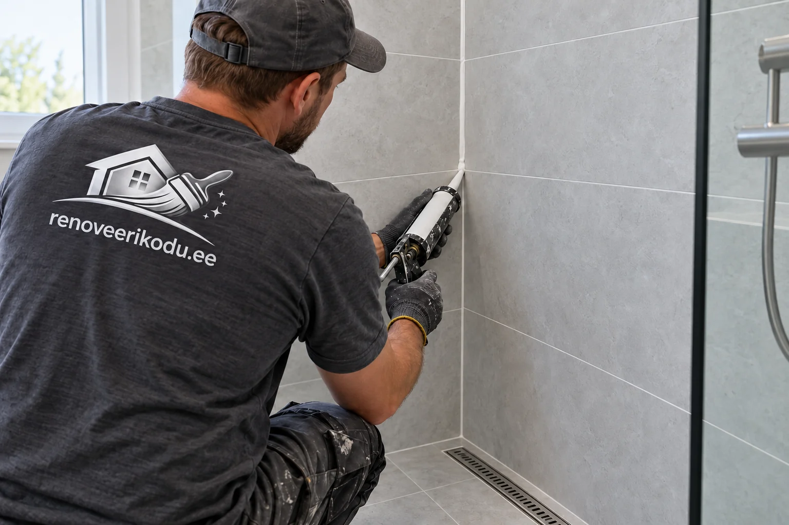

Plaatimine Tallinnas ja Harjumaal
Vannitubade, köökide, esikute ja teiste pindade täpne plaatimistöö.

Plaatimistööde planeerimisel kontrollime aluspinna tasasust, märgruumis kaldeid ja hüdroisolatsiooni ning arvestame plaadi mõõdu ja vuugijaotusega. Nii saab töömahu ja materjalikulu enne alustamist täpsemalt hinnata.
Plaatimistööd algavad aluspinna kontrollist, sest ilus tulemus sõltub sirgest, tugevast ja niiskuse eest kaitstud pinnast. Plaadime Tallinnas ja Harjumaal vannitube, kööke, esikuid, tehnoruume ning teisi pindu, kus on oluline vastupidav ja korrektne viimistlus.
Aitame valida sobiva tööjärjekorra, arvestame plaatide mõõtu, vuugi laiust, kaldeid, äravoolukohti ja ruumi kasutuskoormust. Eesmärk on, et pind näeks hea välja ka aastate pärast, mitte ainult töö üleandmise hetkel.
Mida teenus sisaldab?
- vannitubade, dušinurkade ja WC-ruumide plaatimine
- köögi tagaseinte, esikute ja põrandapindade plaatimine
- hüdroisolatsiooni, tasanduse ja plaatimissegu valik
- vuukimine, silikoonimine ja servade viimistlus
Millal seda tellida?
Tellija otsib tavaliselt plaatijat siis, kui vannituba või köök vajab terviklikku renoveerimist, vana plaat on lahti tulnud või uus projekt vajab korrektset märgruumi lahendust. Hea plaatimistöö vähendab hilisemaid niiskus- ja pragunemisriske.
Tööprotsess
Aluspinna kontroll
Kontrollime niiskust, tugevust ja tasasust, eemaldame lahtised kihid ning parandame ebatasasused. Märgades ruumides planeerime hüdroisolatsiooni ja läbiviigud enne plaatide paigaldust.
Paigutuse planeerimine
Märgime välja lõiked, nähtavad servad ja sümmeetria, et lõpptulemus ei jääks juhuslik. Suureformaadiliste plaatide puhul pöörame erilist tähelepanu tasapinnale ja liimkammi valikule.
Viimistlus ja kontroll
Pärast plaatimist vuugime, puhastame pinnad ja viime üle servad, nurgad ning silikoonühendused. Töö antakse üle koos praktiliste hooldussoovitustega.
Plaatimistööde hinnapakkumine
Plaatimistöö pakkumise koostamisel vaatame lisaks ruutmeetritele ka lõigete arvu, aluspinna seisukorda, hüdroisolatsiooni vajadust, plaatide mõõtu ja ruumi kuju. Vannitoa puhul mõjutavad töömahtu äravoolud, kallete tegemine, dušinurga lahendus ja läbiviigud. Köögi tagaseina puhul on tähtsad pistikupesad, töötasapinna kõrgus ja nähtavate servade viimistlus.
Kvaliteedikontrollis vaatame üle vuukide ühtluse, plaatide tasapinna, nurgad, silikoonühendused ja pinnapuhastuse. Kui plaatimistöö on osa suuremast remondist, seome selle kipsitööde, maalritööde ja sanitaartehniliste tööde järjekorraga, et värskelt tehtud pindu ei peaks hiljem ümber tegema.
Kohalik kogemus ja tööde täpsustamine
Plaatimise puhul on Tallinnas ja Harjumaal sagedased kortermajade vannitoad, kus ruum on väike, läbiviike on palju ja tööjärjekord peab olema täpne. Päringu hindamisel vaatame alati, milline on objekti ligipääs, kas töö toimub elatud ruumis, millised pinnad vajavad kaitsmist ja milline on mõistlik tööjärjekord. See aitab vältida olukorda, kus üks etapp tuleb hiljem uuesti avada või parandada.
Anname enne töö alustamist selge ja realistliku hinnangu. Kui fotodest ei piisa, lepime kokku objekti ülevaatuse. Nii saab materjalid, ajakulu, seotud tööd ja võimalikud riskikohad enne alustamist täpsustada.
Plaatimistööde hinnad
Seinte ja põranda plaatimise töö hind algab hinnakirja järgi 49 €/m²; koos materjaliga algab hind 59 €/m². Materjalide täpne koosseis ja plaatide maksumuse arvestus lepitakse pakkumises eraldi kokku. Aluspinna tasandus, kallete valamine, hüdroisolatsioon, lammutus ja sanitaartehnika täpsustatakse eraldi tööetappidena. Lõplik hind sõltub aluspinna seisukorrast, töömahust ja objekti eripärast. Vaata kehtivat hinnakirja.
Hinnapäringu kiirendamiseks lisa võimalusel fotod, mõõdud, objekti asukoht ja soovitud tähtaeg. Nii saame paremini aru, kas töö vajab objektikülastust või saab esmase hinnangu anda kirjelduse põhjal.
Praktiline tööinfo plaatimise kohta
Materjalid
Plaatimise kvaliteet sõltub aluspinnast, niiskuskaitsest, plaadi tüübist, segust ja vuugimaterjalist. Märgruumis kasutame lahendust, kus hüdroisolatsioon, nurgalindid, läbiviikude tihendused ja sobiv plaatimissegu töötavad koos. Suureformaadilise plaadi puhul peab aluspind olema eriti tasane, sest väike kõverus jääb lõpptulemuses kiiresti näha.
Enne plaatimist: torutööd ja dušilahenduse planeerimine
Enne pindade sulgemist lepime kokku duši, valamu, WC ja pesumasina asukohad ning vee- ja kanalisatsiooniühendused. Torustiku ühendused kontrollitakse ja vajalikud katsed tehakse enne nende katmist. Trapi kõrgus peab arvestama kogu põrandakihti: aluspinda, tasandust, hüdroisolatsiooni, plaatimissegu ja plaati. Elektrilise põrandakütte ning muu elektritöö korraldus täpsustatakse koos vastava spetsialistiga.
Pinnapealne dušisegisti jääb seina ette ning selle ühendused on lihtsamini ligipääsetavad. Seinasisene ehk süvistatav dušisegisti annab puhta ja kaasaegse ilme, kuid paigalduskorpus, torustik ja tihendussõlm tuleb valida enne seina ehitamist. Planeerime tootja nõutud paigaldussügavuse ja hooldusvõimaluse. Termostaatsegisti, käsiduši ja vihmaduši valik mõjutab veevajadust ning äravool peab suutma selle koguse vastu võtta.
Punkttrapp, renntrapp või seinaäravool?
Trappi ei tasu valida ainult välimuse järgi. Olulised on põranda ehituskõrgus, kanalisatsioonitoru asukoht, äravooluvõime, puhastatavus ning sobivus hüdroisolatsioonisüsteemiga. Trapi korpus kinnitatakse stabiilselt ja ühendus veetõkkega tehakse tootja ettenähtud ääriku, manseti või muu tihenduslahendusega.

Punkttrapp – üks äravoolukoht põrandas
Punkttrapp on väike ruudukujuline või ümmargune põrandaäravool. Selle kaudu liigub dušivesi põranda all olevasse kanalisatsioonitorusse. Pildil on dušiala keskel paiknev ruudukujuline trapp.
Kui trapp asub keskel, juhitakse vesi sellesse mitmelt kaldepinnalt. Väike põrandaplaat või mosaiik järgib neid lihtsamini; suure plaadi korral planeerime kaldepindade piiril lõiked. Trapi asukoht lepitakse kokku enne põranda valamist.
Renntrapp – pikk äravool põrandas
Renntrapp ehk duširenn kogub vee pikliku ava kaudu. See paikneb põrandas, sageli dušiseina ääres. Pildil on plaaditava kattega renn: pealmine kate viimistletakse põrandaga sarnase plaadiga ja vesi pääseb sisse katte servadest.
Seinaäärne renn võimaldab sageli ühe suunaga kaldepinda ja suuremat põrandaplaati. Renn võib paikneda ka mujal, kuid siis muutub kallete lahendus. Valikul kontrollime paigalduskõrgust, äravooluvõimet ning seda, kuidas rest ja sifoon puhastamiseks eemaldada.
Seinaäravool – ava seina alumises servas
Seinaäravoolu puhul jääb vee sissevooluava seina alumisse serva, mitte eraldi restina põranda keskele. Põrand on kaldu selle ava poole ning äravoolu korpus ja ühendus paiknevad vastava paigalduslahenduse sees. See ei ole renntrapi paigaldamine seinale.
Lahendus sobib juhul, kui seinakonstruktsioonis ja põranda kõrguses on vajalik paigaldusruum. Seina ja põranda liite hüdroisolatsioon ning hooldusvõimalus planeeritakse enne viimistlust. Olemasolevasse vannituppa sobivust tuleb hinnata objektil.
Trappide pildid näitavad põhimõttelist lahendust. Tegelikud kalded, lõiked ja tihendused sõltuvad ruumist ning valitud tootest.
Näiteks hansgrohe RainDrain on äravoolutoodete sari, mitte kõigi renntrappide üldnimetus. Sarjas on erinevaid lahendusi ning konkreetse mudeli sobivust kontrollime põranda kõrguse, ühenduste ja tootja paigaldusjuhendi järgi.
Aluspinna ettevalmistus ja põranda kallete valamine

Vana viimistluse eemaldamise järel hindame seina ja põranda tugevust, niiskust, pragusid ning tasasust. Lahtised kihid ja nakkumist takistav tolm eemaldatakse. Seinad tasandame märgruumi sobiva materjaliga; plaatseina puhul kontrollime konstruktsiooni jäikust, kinnitusi ja liiteid. Plaatimissegu ei asenda vajalikku aluspinna tasandamist.
Dušiala kalded kujundame sobiva kaldevalu- või tasandusseguga enne hüdroisolatsiooni. Isetasanduv segu üksi ei tekita vajalikku kallet. Lahendus võib olla eraldi kaldus dušiala, mitme kaldepinnaga põrand või seinaäärse renni poole langev pind. Läbimõeldud ukseava, dušiklaas ja põrandatasemed aitavad hoida vett märjas tsoonis. Kalde suurus ja ulatus määratakse projekti ning trapi juhendi järgi; kontrollime, et ei jääks vastukaldeid ega vett koguvate lohkudega kohti.
Krunt, niiskustõke, hüdromastiks ja tihenduslint

Krunt aitab ette valmistada nakkuvat aluspinda, kuid ei tee seda iseenesest veetihedaks. Ka üldnimetus „niiskustõke” ei tähenda automaatselt plaatide alla sobivat hüdroisolatsiooni. Märgruumis valime tervikliku süsteemi, mille komponendid sobivad omavahel ja aluspinnaga.
Hüdroisolatsioonimastiks ehk hüdromastiks moodustab plaatide alla veetõkkekihi. Nurkades ja liidetes kasutame süsteemi nõutud tihenduslinte või nurgatükke, torude ümber mansette ning trapi juures sellele sobivat ühendusdetaili. Ka nišid, lävepiirkond ja segisti läbiviigud vajavad läbimõeldud sõlmi. Kihi paksus, kulu, kihtide arv ja kuivamisaeg lähtuvad tootja juhendist; pelgalt ühtlane värvus ei tõenda piisavat veetõket. Alternatiivina võib sobida süsteemne hüdroisolatsioonikangas.
Milline plaatimissegu valida?
Valik sõltub plaadi materjalist ja mõõdust, aluspinnast, põrandaküttest ning kasutuskohast. Keraamiline seinaplaat, tihe portselanplaat, klaasmosaiik ja niiskustundlik looduskivi võivad vajada erinevat toodet. Kontrollime ka segu sobivust valitud hüdroisolatsiooniga.
- Tsemendipõhine segu: levinud valik seintele ja põrandatele. C2 tähistab parandatud nakkega segu; S1 ja S2 kirjeldavad deformatsioonivõimet. Põrandakütte ning suure plaadi puhul on deformatsioonivõime oluline, kuid täpse toote määrab kogu lahendus.
- T ja E tähised: T tähendab vähendatud libisemist seinal, E pikemat avatud aega. F tähistab kiiret kivistumist, millega kaasneb vajadus töötempot hoolikalt planeerida.
- Valmis pastaliim: ei ole universaalne märgruumi- või põrandalahendus. Kasutusala kontrollitakse tootelehelt.
- Valge või erisegu: läbikumava mosaiigi ja looduskivi korral arvestame värvuse ning niiskustundlikkusega. Reaktiivliime kasutatakse erilahendustes tootejuhendi alusel.
Plaatide jaotus, lõiked ja paigaldus

Enne liimimist koostame plaadijaotuse: kust algavad read, kuhu jäävad lõiked ja kuidas joonduvad vuugid ukseava, niši, segisti ning trapiga. Vaatame tervikuna nähtavaid seinu ja põrandat, et kitsad ribad ei jääks juhuslikult kõige silmatorkavamasse kohta. Täisplaadiga alustamine ühest nurgast ei anna alati parimat tulemust.
Sirge ladumine, nihkega read, kalasaba ja mosaiik mõjutavad lõigete hulka ning materjalivaru. Suure plaadi ja nihkega mustri juures arvestame ka plaadi enda kõverust ja tootja soovitatud nihket. Vuugi laius valitakse plaadi mõõdutäpsuse ja kasutuskoha järgi; ka rektifitseeritud plaati ei paigaldata täiesti vuugita.
Segu kantakse sobiva hammastusega kammiga ja vajadusel ka plaadi tagaküljele. Paigalduse ajal kontrollime nakkuvat kontaktpinda, tasapinda ning servade erinevust. Tasandussüsteem aitab joondada plaate, kuid ei paranda kõverat aluspinda. Konstruktsiooni liikumisvuuke ei kaeta jäigalt üle.
Vuukimine ja silikoonimine

Vuukimine algab pärast plaatimissegu nõutud kivistumist ja vuukide puhastamist. Tsemendipõhine vuugisegu on tavapärane valik; epoksiidvuuk sobib olukordadesse, kus vajatakse suuremat plekikindlust või keemilist vastupidavust. Epoksiid nõuab täpset tööaega ja puhastust ning selle sobivust hinnatakse ka plaadi pinnaga.
Nurgad, eri tasapindade ühendused ning projektis ette nähtud liikumisvuugid saavad sobiva elastse tihenduse. Sanitaarsilikoon valitakse pinna ja kasutuskoha järgi; looduskivile on oluline mittemääriv sobiv toode. Silikoon ega plaadivuuk ei asenda plaatide all olevat hüdroisolatsiooni. Kasutamisel hoitakse elastsed vuugid puhtad ja vajadusel uuendatakse neid.
Segistid, dušiklaas ja lõppkontroll
Pärast viimistlusmaterjalide vajalikku kivistumist paigaldatakse kokkulepitud sanitaartehnika ja nähtavad segistiosad. Dušiklaasi kinnitused planeeritakse nii, et veetõket kahjustavaid läbiviike oleks võimalikult vähe; vajalikud kinnitussõlmed tihendatakse juhendi järgi. Kontrollime äravoolu, vuuke, ühendusi ja üldist viimistlust ning anname juhise, millal võib põrandale astuda ja dušši kasutada. Põrandaküte taastatakse valitud süsteemi juhendi järgi järk-järgult.
Ajakulu
Väike köögi tagasein võib valmida lühikese ajaga, kuid vannituba vajab tavaliselt mitut etappi: vana pinna eemaldus, tasandus, hüdroisolatsiooni kuivamine, plaatimine, vuukimine ja silikoonimine. Kuivamisajad on osa kvaliteedist, mitte paus töökorralduses.
Hinnategurid
Hinda mõjutavad aluspinna seisukord, plaatide mõõt, lõigete arv, kallete tegemine, nišid, dušinurga lahendus, hüdroisolatsiooni ulatus ja see, kas objekt asub elatud korteris või tühjal pinnal.
Levinud vead
Kõige sagedasemad vead on liiga kiire alustamine niiskel või ebatasasel pinnal, läbiviikude nõrk tihendamine, vale segu valik ning vuukide või silikooni tegemine enne pinna piisavat kuivamist.
Soovitused kliendile
Enne hinnapäringut tasub saata ruumi mõõdud, fotod, plaadi suurus ja info selle kohta, kas vana plaat jääb eemaldada või on pind juba ette valmistatud. Nii saab pakkumine olla täpsem ja tööjärjekord realistlikum.
Korduma kippuvad küsimused
Kui palju maksab plaatimine?
Hind sõltub aluspinna seisukorrast, plaatide suurusest, lõigete arvust, hüdroisolatsioonist ja töömahust. Täpse hinna saame anda pärast objekti või fotode ülevaatust.
Kas teete ka hüdroisolatsiooni?
Jah, märgades ruumides teeme vajadusel hüdroisolatsiooni ja kontrollime läbiviigud enne plaatimist.
Kas paigaldate suuri plaate?
Jah, suureformaadiliste plaatide puhul arvestame aluspinna tasasust, tõstmist, lõikeid ja sobivat paigaldussegu.
Millistes piirkondades töötate?
Peamine tööpiirkond on Tallinn ja Harjumaa, kuid suuremate tööde puhul vaatame objektid üle ka teistes piirkondades.
Kas vana plaadi peale võib uue plaadi panna?
Mõnikord on see tehniliselt võimalik, kuid ainult siis, kui vana plaat on tugevalt kinni, pind on sirge ja niiskuskaitse lahendus on kontrollitud. Märgruumis eelistame enamasti vana pinna avamist, sest peidetud kahjustused tuleb enne uut viimistlust välistada.
Kas plaatimistöö sisaldab vuukimist ja silikoonimist?
Tavaliselt jah. Pakkumises täpsustame, kas hind sisaldab plaatimist, vuukimist, silikoonühendusi, hüdroisolatsiooni ja aluspinna ettevalmistust või ainult ühte tööetappi.
Millal saab plaaditud pinda kasutama hakata?
See sõltub segust, vuugist, ruumi niiskusest ja tootja kuivamisajast. Põrandale astumise ja duši kasutamise aeg ei ole alati sama, seetõttu anname üleandmisel konkreetse juhise.
Kas klient peab plaadid ise ostma?
Klient võib plaadid ise valida ja osta, kuid saame aidata koguse, varu ja tehnilise sobivuse hindamisel. Suureformaadilise või reljeefse plaadi puhul tasub sobivus enne ostu üle vaadata.
Kas tehtud töödele kehtib garantii?
Jah. RK Meistrid OÜ tehtud ehitus- ja viimistlustöödele kehtib 3-aastane garantii. Konkreetse töö sisu ja kokkulepitud tingimused fikseeritakse hinnapakkumises.
Kas renntrapp sobib igasse vannituppa?
Mitte alati. Kontrollida tuleb põranda ehituskõrgust, kanalisatsiooni asukohta, äravooluvõimet ning hüdroisolatsiooniga ühendamise võimalust. Trapi mudel ja asukoht valitakse enne kallete tegemist.
Kas krunt või niiskustõke asendab hüdroisolatsiooni?
Krunt ei asenda hüdroisolatsiooni. Märgruumis on vaja plaatide alla sobivat veetõkkesüsteemi koos nurkade, toruläbiviikude ja trapi tihendustega. Üldnimetusega niiskustõkke sobivus kontrollitakse tootejuhendist.
Millal tuleb valida seinasisene dušisegisti?
Seinasisene segisti tuleb valida enne seina sulgemist ja plaatimist, sest paigalduskorpus vajab kindlat sügavust, sobivaid toruühendusi ning tihenduslahendust. Nähtav viimistluskomplekt peab sobima valitud korpusega.
Kas suure plaadiga saab teha dušipõranda kalded?
Jah, kui plaadijaotus ja kaldepinnad seda võimaldavad. Punkttrapi ümber võivad suured plaadid vajada kaldepindade piiril lõikeid. Seinaäärse renntrapi korral võib sobida ühe suunaga kalle. Lahendus otsustatakse enne plaatide ostmist.
Mida hinnapäringule lisada?
Lisa fotod, seina- ja põrandapindade mõõdud, plaadi mõõt ja materjal, objekti asukoht ning soovitud tähtaeg. Märgi, kas vaja on vana viimistluse eemaldamist, torutöid, trapi vahetust, kallete valamist, hüdroisolatsiooni või seinasisest segistit.
Milliste töödega plaatimine tavaliselt seostub?
Vannitoa ja köögi plaatimine on sageli osa suuremast tööjärjekorrast. Enne plaati tuleb aluspind sirgeks ja niiskuskindlaks saada, mistõttu on paljudel objektidel vaja ka märgruumi seinte ja lagede ettevalmistust või vana viimistluse eemaldamist. Kui plaatimistöö on osa korteri tervikremondist, tasub hinnata ka järgnevaid siseviimistluse töid ning vaadata plaatimistööde orienteeruvaid hindu.